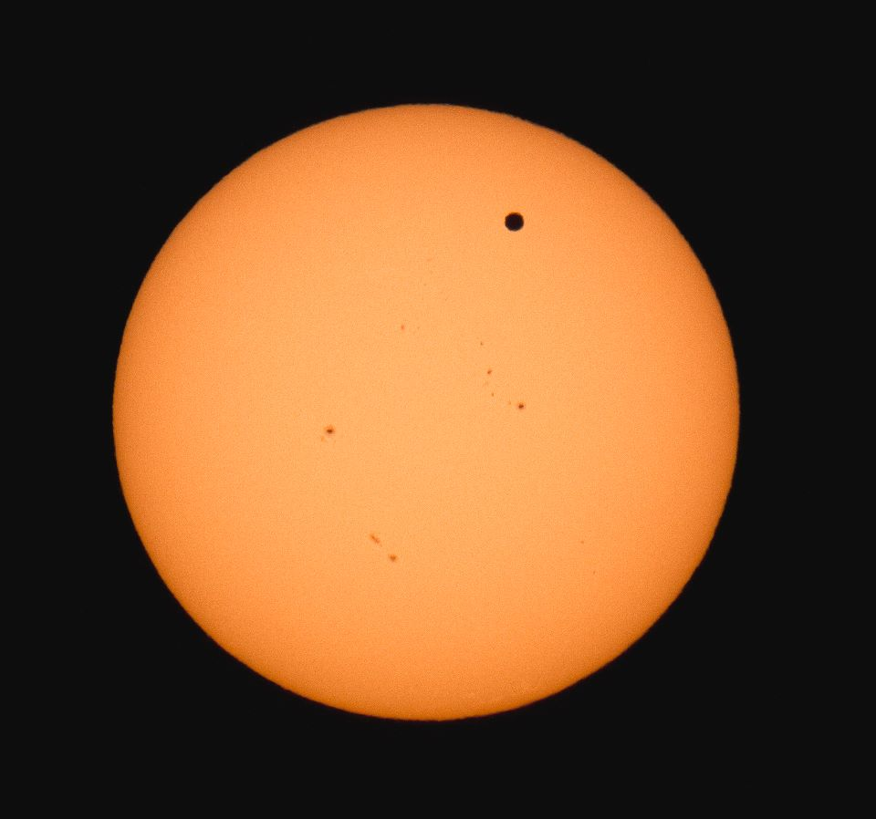
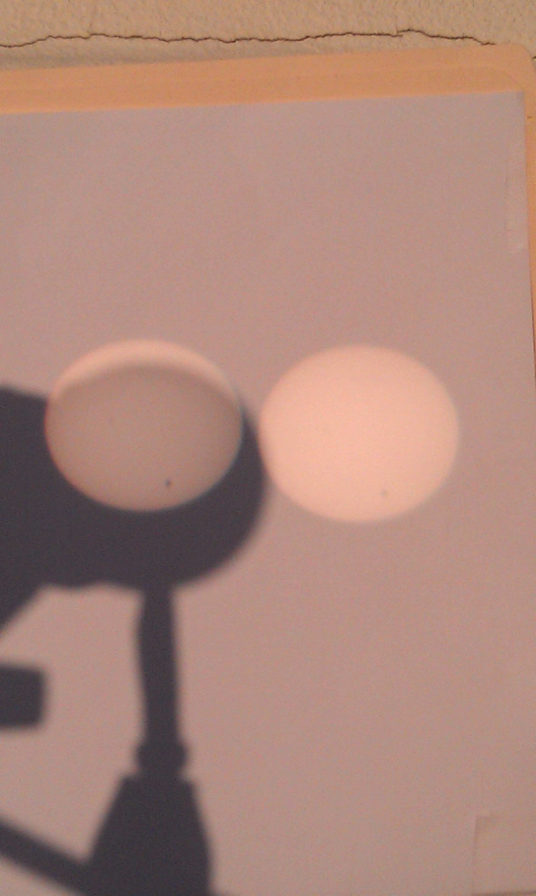

Transit of Venus
From Earth, the planet Venus can be seen transiting the Sun four times every 243 years. These individual transits do not occur at regular intervals though, and the next pair of transits will not take place until December 2117 and December 2125. Fortunately, the most recent transits of Venus took place on June 8, 2004 and June 5, 2012 which led to popular events at the observatory on each of those days. This picture below was taken by Mike Roman who traveled to Lake Ontario to see the transit.

Cloudy skies severely jeopardized the chance to see the transit of Venus at Fuertes Observatory. However, luck was in our favor as the skies cleared just in time for the transit, bringing joy to the hundreds of people and dozens of eclipse glasses onsite for the rare event. In this picture below, you can see the transit on a piece of paper placed behind a pair of binoculars.

If you missed the two most recent transits of Venus and do not want to wait around until 2117 to see the next one, there will also be a transit of Venus observable from Mars on August 19, 2030. If you do not plan to be on Mars or nearby the Red Planet at that time, chances are there will be probes and/or rovers that will be able to observe the transit.